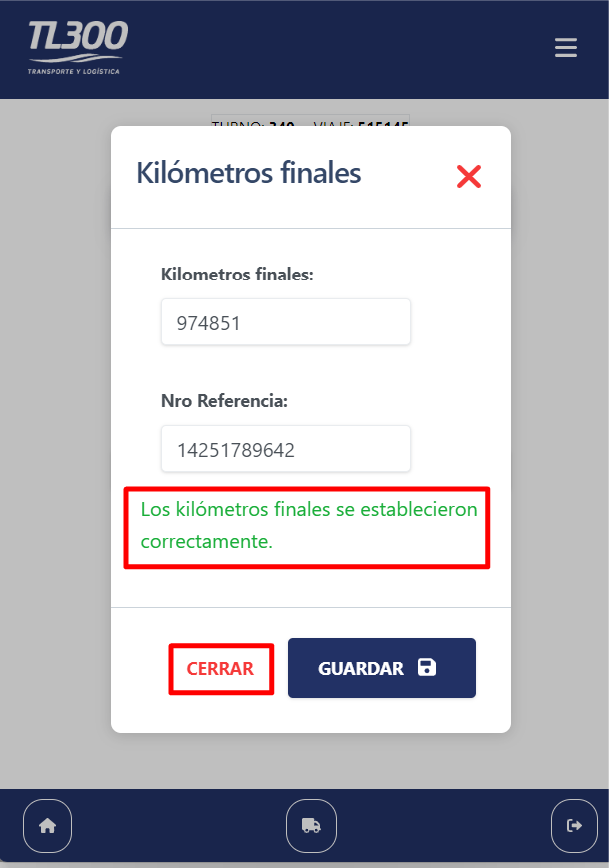

Añadir a pantalla de inicio
Añadir a pantalla de inicio
Al ingresar a la aplicación por primera vez en el navegador se verá una opción abajo para agregarla a la pantalla de inicio de esta manera la app se instalará en el teléfono y podrá acceder a ella mediante el icono en la pantalla de inicio
Inicio de sesión
Pantalla de inicio de sesión
La primera pantalla que se ve en la app es la de inicio de sesión, el cual es un formulario simple donde se debe escribir el número de documento y contraseña con la que se ingresa al sistema de sueldos.
Comenzar turno
Pantalla de inicio
Una vez se haya iniciado sesión, se verá la siguiente pantalla de inicio:
Presione el botón "Iniciar turno" para ir a la pantalla de selección de viaje
TURNO INICIADO
Si ya tiene un turno iniciado y hay un viaje en curso le saldrá:
Presione el botón "Ir al turno" para ir a la pantalla del viaje
Seleccionar viaje
Pantalla de selección del viaje
Después de comenzar el turno, verá la siguiente pantalla:
Presione el botón de "actualizar" para que tome los viajes disponibles para el turno:
Selecionar viaje
Verá los viajes disponibles para el turno
Presione el botón "Continuar" en la tarjeta del viaje correspondiente:
Viaje
Inicio del viaje:
Una vez haya selecionado el viaje verá la pantalla de inicio del viaje
Presione "Iniciar viaje" para ir a la pantalla de etapas del viaje
Etapas del viaje
Una vez se haya iniciado el viaje se mostrará una pantalla en la que se verán las diferentes etapas del viaje, deberá presionar el botón que está en el medio para indicar que la etapa se completó:
Si por error presionó el botón sin completar la etapa, puede revertirlo presionando el botón de que está en la izquierda de donde se muestra la etapa actual del viaje:
Eso lo devolverá a la pantalla de la etapa anterior.
Carga de combustible:
Al llegar a la etapa de "Cargando combustible" se le abrirá automáticamente un formulario para que especifique los litros de combustible y los kilometros actuales del camión. Son campos obligatorios que debe llenar o de lo contrario la app no lo dejará avanzar a la siguiente etapa.
Presione "Guardar" para confirmar el envío de los datos. Le saldrá que la carga de combustible fue correcta:
Presione "cerrar" para volver a la pantalla de etapas.
Si por algún motivo cargó los datos mal y envío el formulario, puede volver a abrir la ventana de carga de combustible para actualizar los datos.
En caso de error:
Si por algún motivo externo como problemas de conexión a internet o se cierra la app por error, reinicie la app y presioné el boton:
Que se encuentra en el medio del menú de abajo.
Esto lo volverá a la última etapa que registró.
Presione "Iniciar viaje" para ir a la pantalla de etapas del viaje
Finalizar turno
Cuando llegue a la etapa "Viaje Finalizado" se le abrirá una ventana con un formulario para poner los kilométros del camión
y un número de referencia.
Estos datos son obligatorios y no podrás finalizar el turno si no los completa.
Presione "Guardar" para confirmar el envío de los datos.
Le saldrá un aviso de que los datos se guardaron correctamente.

Presione "Cerrar" para volver a la pantalla de finalización del turno:
Al presionar "finalizar turno" se le abrirá una pantalla con un alerta donde
deberá confirmar la hora de inicio y finalización del turno (modifique la fecha y hora de ser necesario):
Presione "Guardar" así no haya modificado ningún dato.
Verá un mensaje de que los datos del turno se guardaron correctamente. Presione "Cerrar" Y el turno habrá quedado completado.